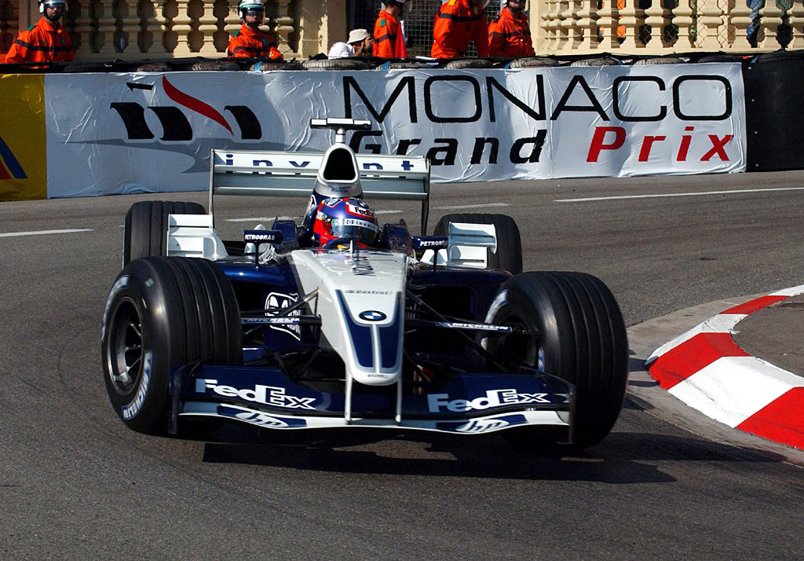
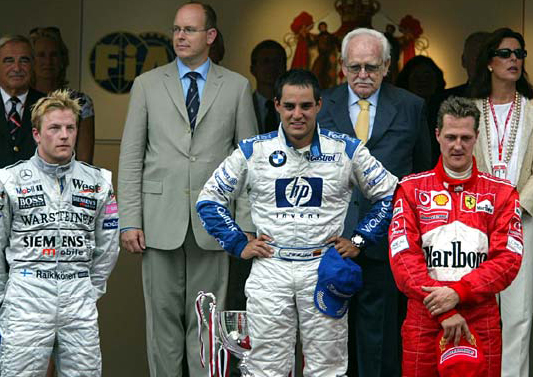

MONTOYA VIVE DIA DE PRINCIPE

Colombiano vence o segundo GP de sua carreira e a Williams põe fim ao jejum de 20 anos sem vitórias no principado.
Juan Pablo Montoya conseguiu em Mônaco, uma vitória bem mais ampla que as estreitas ruas desse pequeno principado incrustado na costa francesa do mar Mediterrâneo. O segundo triunfo do colombiano na Fórmula 1 quebrou um jejum de 20 anos da Williams nessa corrida, cuja última vitória nas subidas e descidas de Monte Carlo aconteceu em 1983, com o finlandês Keke Rosberg e, esperam Frank Williams e Patrick Head, pôs fim a uma fase crítica na relação entre a equipe inglesa e a BMW. Não bastasse isso, o próprio Montoya espera que o resultado de domingo se reflita na disputa pessoal com Ralf Schumacher, seu companheiro de equipe. Ralf obteve a pole position, teve a pista livre na primeira fase da corrida, mas não conseguiu abrir vantagem suficiente para manter-se à frente do colombiano após o primeiro dos seus dois pit stops. De se notar que todos os pilotos de ponta adotaram a mesma estratégia embora o espanhol Fernando Alonso não tenha trocado pneus na sua segunda parada. Voltando à rivalidade entre os pilotos da Williams, é importante ressaltar que Ralf cometeu uma grave falha, ao errar a saída de curva da Rascasse, uma das mais lentas do circuito. Ele evitou uma batida frontal contra o guard-rail e conseguiu prosseguir na prova. Ainda que ele seja o único piloto a ter marcado pontos em todas as provas disputadas este ano, sua atuação está longe de ser o que a Williams e a BMW esperam. A vitória de Montoya em um Grande Prêmio de alta repercussão e obtida em um momento crítico na relação entre equipe e fabricante tem tudo para fazer do colombiano o menino favorito da porção inglesa dessa combinação e fazer o lado alemão repensar a conveniência de bancar um patriotismo pouco produtivo. Na McLaren foi interessante notar a postura típica de campeão na atuação de Kimi Raikkonen: sem maiores dificuldades para reafirmar sua condição superior a David Coulthard, o finlandês não esmoreceu na sua perseguição ao vencedor e tampouco cometeu erros, apostando numa corrida onde o mais importante era terminar à frente de Michael Schumacher e manter a liderança do Campeonato Mundial de Pilotos. O piloto alemão certamente não aproveitou todo o potencial que seu carro, apesar da inferioridade dos pneus Bridgestone em comparação aos da Michelin, poderia oferecer. As condições típicas de Mônaco, onde ultrapassar é coisa rara, foram exacerbadas pelo fato do atual campeão ter encontrado o italiano Jarno Trulli à sua frente, algo que piorou essa condição em boa parte da prova. A tocada forte de Schumacher nas voltas finais mostrou, porém, que ele está pronto para dar o bote em cima do finlandês da McLaren, equipe que em Mônaco recuperou a liderança do Mundial de Construtores.
Emoção mesmo, daquelas de ver piloto ultrapassando piloto, só na largada: Juan Pablo Montoya superou Kimi Raikkonen e, Fernando Alonso, deixou David Coulthard para o lado e Rubens Barrichello para trás, em manobra digna de campeão. Pena que o arrojo do espanhol, como o da maioria dos demais pilotos, tenha terminado por aí. Verdade seja dita, a corrida de Mônaco esteve longe de prender a atenção de quem viu a prova. Ainda na primeira volta, dois pilotos criaram alguma preocupação para os fiscais de pista. Heinz-Harald Frentzen errou feio ao completar os esses da piscina, cuja área de escape na saída foi aumentada amplamente este ano, e bateu forte no guard rail. Frentzen causou um bom prejuízo a Peter Sauber e seu início de corrida, que pode ter significado sua última participação neste GP. O Safety Car nem tinha entrado na pista ainda e Juan Pablo Montoya esteve a milímetros de provocar uma relargada: seu carro saiu demasiado de traseira ao completar a curva que dá acesso a pseudo-reta de largada e quase bateu no guard rail. As causas para tanto: excesso de adrenalina em inicio de corrida e grande quantidade de uma mistura jogado na pista por fiscaais que tinha a finalidade de retirar o óleo deixado no asfalto naquele trecho do circuito monegasco por outras categorias que correram antes. A partir daí o que se viu foi uma corrida cautelosa por parie dos principais concorrentes, exceto Montoya, que pressionou Raif Schumacher de maneira decisiva nas primeiras 22 voltas da competição.
Não é a primeira vez que isso acontece, o que leva à pergunta: o espírito do novo regulamento da F-1 permite ou não que se mexa nos carros entre a prova de classificação e a largada? Para a maioria das equipes tudo indica que não. Para a McLaren, tudo indica que sim: rumores que circularam no congestionado paddock de Mônaco, onde privilegiados podem comprar ingressos caríssimos que os deixam mais perto do que nunca aos seus ídolos, davam conta que no último fim de semana a equipe de Ron Dennis solicitou autorização da FIA para trocar peças do motor do carro de Kimi Raikkonen. Foi a terceira vez que isso ocorreu e o novo regulamento de 2003 deixa aberta a possibilidade de se mexer nos carros por razões de segurança. As alterações que a McLaren tem feito em seus carros, porém, parecem ter pouco a ver com isso. Como é normal acontecer com Max Mosley, ele escolhe cuidadosamente os assuntos sobre os quais quer dissertar. O tópico atual é um fundo bancado pelos grandes construtores e que garantiria um reforço de caixa às três equipes independentes (Jordan, Minardi e Sauber) para a compra de motores. Difícil acreditar que Renault ou a Ferrari (leia-se Fiat) pagariam para uma delas correr com motores Cosworth, em última análise, uma marca da Ford.
Cristiano da Matta acabou não marcando pontos em sua primeira participação em Mônaco, mas saiu do principado com a moral bem alta: conseguiu o 10° lugar no grid de largada e terminou a corrida em 9º, tendo andado sempre à frente de seu companheiro de equipe Olivier Panis, piloto bem mais experiente e que conseguiu sua única vitória na F-1 exatamente neste circuito. O GP de Mônaco é dos poucos onde as equipes de F-1 não efetuam nenhum treino prévio, o que aumentou a pressão sobre da Matta. No primeiro dia de treinos ele ficou em 19º, mas não se deixou abater. Mas o que faltou para ele ganhar mais uma posição e terminar entre os oito primeiros? “Não faltou muito não. Eu fiz uma corrida tranqüila, sem pegar muito tráfego e o 9º lugar era o que nosso carro permitia hoje. Durante boa parte da corrida ele começou a sair de traseira e isso determinou meu ritmo”, explicou o piloto. Rubens Barrichello fez uma de suas apresentações mais burocráticas dos últimos tempos e, apesar de ter ocupado temporariamente a 2ª posição, acabou num discreto 8º lugar. Após a prova, a explicação: “Não tenho muito a declarar sobre uma corrida que só posso descrever como desapontadora. Cada vez que eu tentava aumentar meu ritmo e andar no limite do meu carro, eu pegava tráfego. Com isso, não consegui explorar o verdadeiro potencial da Ferrari na corrida de Mônaco.” Se a corrida de Rubinho foi de pouco brilho, pior ainda para Antonio Pizzonia, da Jaguar. O amazonense largou em 15° e sua presença na corrida teve curta duração. Tanto ele quanto seu companheiro de equipe, o australiano Mark Webber, abandonaram com problemas técnicos que simplesmente impediam o motor Cosworth de funcionar. “Fiz o que estava ao meu alcance”, comentou.
Após quatro vitórias consecutivas da Bridgestone (uma de Giancarlo Fisichella e três de Michael Schumacher), a Michelin conseguiu equilibrar a disputa na guerra de pneus e agora conta com três vitórias (Uma de David Coulthard e de Kimi Ràikkõnen e uma de Juan Pablo Montoya). A superioridade dos pneus franceses em Mônaco ficou patente desde os treinos: na classificação, por exemplo, somente as Ferrari de Schumacher e Barrichello destoavam no grupo dos 10 primeiros. Desde o ano passado os pneus Michelin têm apresentado rendimento superior em Mónaco; em 2002 a Ferrari também foi a única equipe a estragar a festa dos franceses. A razão desse desempenho superior pode ter suas raízes no retrospecto da Michelin na F-1: ao contrário da Bridgestone, a empresa de Clermont Ferrant já contava com várias participações nesse GP, em particular na era turbo. Posto que não há a mínima condição de testar pneus de F-1 nas ruas de Monte Carlo fora dos treinos oficiais, esse passado faz toda a diferença. Além disso, a marca francesa desenvolveu para esta temporada um sistema onde a suspensão dos carros é parte integrante do projeto dos pneus. Esse detalhe, inclusive, afetou os prazos de desenvolvimento e testes do ainda inédito modelo McLaren MP4-18. Será que esta situação vai perdurar dentro de 15 dias, quando a F-1 cruza o Atlântico norte para disputar o GP do Canadá? Provavelmente não: o circuito Gilles Villeneuve permite média horária mais alta, o que dispensa o uso de pneus ultramacios, caso de Mônaco, e as condições atmosférica são bem diferentes daquelas vistas na corrida de Monte Carlo. Vale lembrar que no ano passado os dois Williams-BMW de Juan Pablo Montoya e Ralf Schumacher ficaram separados pelas Ferrari de Michael Schumacher e Rubens Barrichello. Na corrida, foi David Coulthard, com seu McLaren Mercedes, quem impediu uma dobradinha da Scuderia em sua 15ª vitória. Pode-se esperar, portanto, uma revanche das mais interessantes dentro de duas semanas. Mais do que isso, a categoria só tem a ganhar se outra equipe cliente da fábrica japonesa conseguir ser incluída num grupo no qual McLaren, Williams e Renault vêm causando muitas dores de cabeça à solitária Ferrari.
